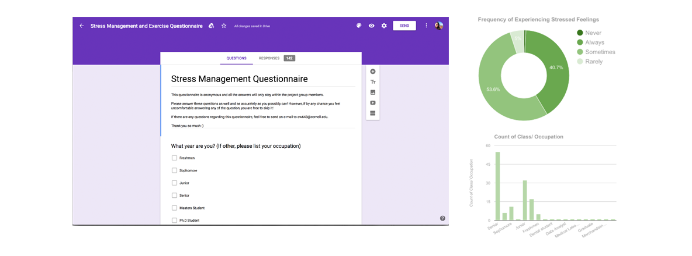
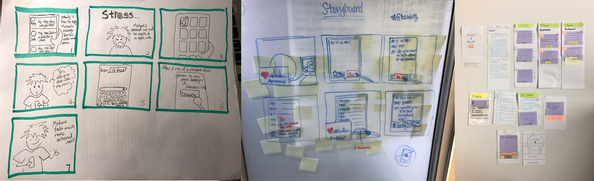
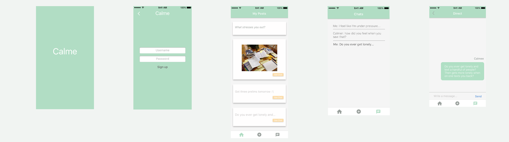
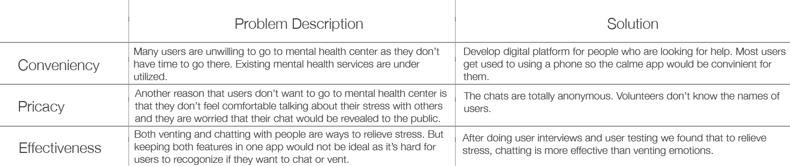

Calme
Calme is an App designed to help college students manage stress.
Intro
-
BACKGROUND
According to 2013 National College Health Assessment, about one-third of U.S college students had difficulty functioning because of stress and almost half of them responded that they felt overwhelming anxiety during school years. Existing mental health services are underutilized. Therefore, an effective assistive technology for stressed college students is in high demand.
-
OUR RESEARCH QUESTION
How can a technology effectively help college students manage stress?
-
KEY GOAL
Create an assistive technology that would easily and effectively help students to manage stress.
STEP1. OBSERVE
Sent out surveys to target audience
We created questionnaires using Google forms and then sent out the questionnaires to college students, who were our target audience. We posted the questionnaires in certain facebook groups such as CS group and information science group where most users were stressed people.

We received 142 responses in total. The data informed our in person interview designing process.
Conducted interviews with stressed college students.
Interviews were conducted in person. The interviews were conducted in places where participants would use technologies when they were stressed. It's a good way to simulate the scenario and to let the interviewees express their true feelings. My interviewee chose the library because that was where he felt overwhelmed and stressed by homework.
Goal: We were interested in finding when/where/what/how stressed college students interact with technologies.
Interview Questions
Basic information (demographic info): the purpose is to classify users based on their diversity.
1. Tell me about yourself. How old are you? What major are you? How often do you feel stressed?
Reflections (scenario specific experiences): the purpose is to make participants reflect on their past experiences and to see what trouble they are experiencing due to stress.
1. Did you run into any troubles due to stress? If so, what was it?
2. How often do you use stress management related technologies?
3. Can you walk us through the technologies you often use to help you manage stress and tell us what are the features of the technology that you use the most? And show us the above stated features?
Technology Usage (product specific experiences): the purpose is to better understand the context in which our stress management technology will be used.
1. Do you use any assistive technologies, to overcome the problems? What are they? Do you find them helpful? What are the advantages and disadvantages of them?
2. Do you have any expectations of stress management technology?
Target audience
Stressed college students who have basic knowledge of using technologies.
BIOGRAPHY OF INTERVIEWEES
We interviewed 5 target audience, whose ages were between 18 to 24. Three were male and two were female. We recruited them through posting and email.
Create affinity diagram.
Purpose: organize activity notes into common
patterns and themes across users.
Create Personas (main and secondary).
Goal: to create reliable and realistic representations of the key audience segments for reference.
Identify pain points:
1. Users did not like going to mental health center for stress related issues.
2. Self-help techniques were the most effectively way to manage stress. But many people were not aware of that or didn't know how to self-help.
Key findings
Users have the need of managing stress . But many of them didn't know how to manage stress or weren't aware of how stressful they were.
STEP2. THINK
Brainstormed ideas based on the personas we create.
Competitor Analysis
People could relieve stress by doing exercises, venting emotions or talking with people. In this project, we focused on giving people emotional support to help them manage stress. I conducted competitor analysis to understand areas of opportunities for stress management technologies.
Chat: Some existing stress management apps, such as Kindly, Thrive and Let's Talk, allow stressed students to chat with mental health professionals to ask for help. This feature is useful in a way that some users could get reference of how to deal with stress. But these apps cannot help everyone to manage their stress as everyone stresses about different issues. Self-help would be the most effective way to relieve stress.
Vent: Some apps, such as YikYak and Whisper, allow users to vent their emotions anonymously. This design gives users more privacy and makes users feel comfortable to relieve their stress. But it is because users can say anything without any worries, the words in the app could get aggressive sometimes and in turn hurt other users.

STEP3. DESIGN
Low-fi Prototype: storyboard and paper prototype
Main Features
Users can anonimously chat with mental health consultants.

We conducted another round of user interviews to study people's perference on venting or chatting to relieve stress. There were four important findings based on our interview results:
1. Most users cared most about their own issues. They were not interested in browsing other people's posts. Seeing other stressed people's posts would also stress them even more.
2. Anonimity was really important to stressed people. Some target audience said that they were reluctant to go to mental health center to chat with consultants because they didn't want to reveal their identities.
3. Most users are looking for solutions to manage stress. Venting emotions would only help them relive stress for a little while. But users would feel stressed again afterwards. Therefore, chatting would be more effective than venting to relieve stress.
4. Many users were not willing to chat with consultants as they thought with their packed schedule, going to mental health center would be too much of a commitment.
Calme was designed to include both anonimity feature and consulting feature to make users feel comfortable to effectively manage stress.
High-fi Prototype: software prototype (InVision)

STEP4. TEST
User Testing
We asked participants to perform some tasks using the InVision prototype.
Heuristics Evaluation
We did Heuristics evaluation based on users' feedback to understand how to improve the design. In the evaluation process we focused on four main points:
1. Will the user try and achieve the right outcome?
2. Will the user notice that the correct action is available to them?
3. Will the user associate the correct action with the outcome they expect to achieve?
4. If the correct action is performed; will the user see that progress is being made towards their intended outcome?

STEP5. IMPROVE
Based on user feedback and the Heuristic evaluation, we made mental health services more accessible to users by designing the Calme app. Existing campus mental health services were underutilized. So we made the calme community a school-based community. Trained volunteers could help out users not only through face-to-face chatting but also through using the app. In a school-based community, volunteers also have a better idea of how to help out with stressed students.
We also simplified the app by removing features like venting and social. Based on the user testing result, users care most about their own issue and won't read others' posts. Also they think that the most effective way of managing stress is to chat with people or look for guidance of managing stress.